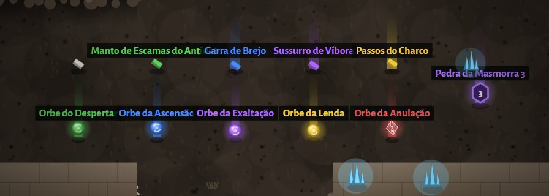

Equipamentos
O herói usa 5 peças: arma, capuz, peitoral, luvas e botas. Cada peça tem uma base (dano ou armadura), uma raridade e de 0 a 4 atributos.

Espaços de equipamento
Raridades
- Força da base multiplica o dano da arma ou a armadura da peça. A raridade não aumenta os atributos: o que muda é a quantidade deles e a chance de tiers bons (veja chances de tier).
- O Lendário ganha também +1 numa habilidade da classe (12% de chance de +2). Pode passar do rank máximo.
- Nomes: Comum usa o nome da base ("Capuz de Couro"); Incomum soma um sufixo do atributo ("Capuz de Couro do Vigor"); Raro e Épico ganham um nome sorteado ("Presa de Cinzas"); Lendário tem nome próprio por peça.
Nível do item (ilvl) e nível exigido
Todo item tem um ilvl, o nível em que caiu (o nível da criatura; elite +1). O ilvl define a base, os valores dos atributos e o melhor tier possível. Para equipar, o herói precisa do nível exigido:
Armas (por classe)
A base da arma muda com o ilvl. Cada base tem uma velocidade de ataque (ataques por segundo) e um multiplicador de dano. O dano da arma = (3 + 1,5 × ilvl) × multiplicador × sorte da base (até +45%) × força da raridade.
Armaduras
As 4 peças de armadura têm armadura base = (3 + 1,3 × ilvl) × peso da peça × sorte (até +50%) × força da raridade. O nome da base muda a cada 10 níveis de item.
De onde vêm os itens
Das criaturas
- Criatura comum: 12% de chance de deixar 1 item.
- Elite (nome dourado, maior): 75% de 1 item e mais 35% de um segundo.
- Chefe (Masmorra e mapas do Atlas): 3 itens extras, com a sorte de elite.
- 22% dos itens são armas; o resto se divide entre as 4 armaduras.
Do Mercador
Toda vez que você chega na vila, o Mercador traz 3 itens novos da sua classe, no seu nível. Raridade: Comum 60%, Incomum 30%, Raro 7,5%, Épico 2%, Lendário 0,5%.
Da Forja
3 itens iguais (mesmo espaço e raridade) viram 1 da raridade acima. Veja Forja.
Itens de classe
- Armas são de uma classe: o Arqueiro usa arcos, o Guerreiro espadas/machados, o Mago cajados.
- Lendários também são da classe da habilidade que dão.
- 25% dos itens que caem são de outra classe. Não dá para equipar, mas dá para vender ou usar na Forja.
- A janela do item avisa "só Guerreiro" (ou a classe certa) e mostra o nível exigido em vermelho se ainda faltar.
Preços de compra e venda
Venda = (4 + 2 × ilvl) × multiplicador da raridade. O Mercador cobra 4 vezes o valor de venda.